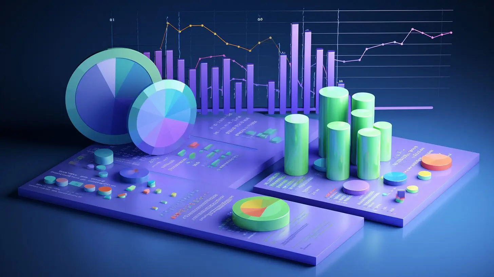
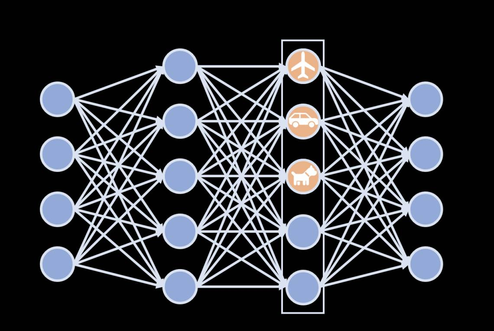

Welcome! This chatbot is your guide to all things me.
Curious? Ask me anything!
🎓
Education
Master of Science, Applied Data Science
Major GPA: 4.0/4.0
Bachelor of Arts, Data Science
Bachelor of Arts, Cognitive Science (AI Focus)
Cumulative GPA: 3.8/4.0
Honors: Dean's List (All semesters)
⚡
Technical Skills
Programming Languages
Python
SQL
C++
Excel
AI & Machine Learning
Neural Networks
NLP
Scikit-Learn
Generative AI
Ollama
Flowise
Data & Analytics
Apache Spark
Tableau
Power BI
Pandas
MLOps
Data Pipelines
Cloud & Databases
AWS EC2
DynamoDB
SAP HANA
MySQL
Snowflake
Git
GitHub
💼
Professional Experience
- Built ML classification model on 100M+ smart meter readings achieving 85% accuracy for voltage classification
- Designed Tableau and Power BI visualizations for executive stakeholder decision-making processes
- Reduced company expenditures by 24% through comprehensive data analysis and optimization strategies
- Collaborated with award-winning data scientists on real-time infrastructure monitoring systems
- Performed sentiment analysis on 10,000+ survey responses using advanced NLP techniques
- Built automated Python scripts reducing data processing time by 50% for audience research
- Conducted multivariate A/B testing leading to 21% increase in advertisement retention rates
- Analyzed audience reactions to major entertainment content including films and sports broadcasts
🧬
Research & Academic Work
- Applied deep learning techniques to model neurochemical responses to chronic stress and addiction
- Developed chemical pathway simulation models achieving 22% accuracy improvement over baseline
- Implemented MLOps pipelines for automated model retraining and performance monitoring
- Conducted research on reward system dysfunction using advanced neural network architectures
- Analyzed Air Quality Index (AQI) and asthma rates using SAP HANA, Python, and SQL
- Developed predictive models to assess air quality's impact on public health outcomes
- Created comprehensive data visualizations using SAP Predictive Analytics platform
- Identified regional health trends through statistical analysis of environmental data
🌟
Leadership & Activities
- Organized and coordinated multiple fundraising events for community outreach initiatives
- Raised $1,000+ for The People Concern, a local homeless services organization
- Led team of volunteers in community service projects and social impact initiatives
Early Academic Career
The Question That Started It All
My journey didn't start with a keyboard—it started with a question: how do we make systems work better for people? Working in hospitals and research labs, I expected clinical care would be my path to help others. But what struck me wasn't the hands-on care—it was what happened behind the scenes. I saw how organized data reduced stress, how better information enabled faster responses, and how thoughtful systems changed outcomes.
Healthcare
Research
Systems Thinking

The Pivot Moment
Discovering the Power of Data
I realized that real impact could come from optimizing the invisible—the pipelines, processes, and flow of information. This reflection changed my path entirely. I began to see how data science could bridge the gap between technology and human needs, making systems not just more efficient, but more empathetic and responsive to the people they serve.
Data Systems
Process Optimization
Impact

2022 - Present
University of Southern California
I pivoted toward data science and AI, enrolling at USC for a double major in Data Science and Cognitive Science. I wanted to understand both how people think and how machines learn—and more importantly, how they can work together to create meaningful solutions. This interdisciplinary approach has shaped my perspective on building technology that truly serves human needs.
Data Science
Cognitive Science
AI
Human-Computer Interaction
June - August 2023
MarketCast - Data Science Intern
My first industry experience merged data with culture. I analyzed audience reactions to films like Barbie and major sports broadcasts, using NLP and A/B testing to improve ad targeting and retention. It was exciting to see how storytelling and analytics could shape how content reached people, but while entertainment was fast-paced and creative, I found myself craving deeper systemic impact.
NLP
A/B Testing
Entertainment Analytics
Audience Research

Fall 2023 - Present
USC Research Lab - Applied Data Science
Diving deeper into applied science, I joined a research lab modeling neurochemical responses to stress and addiction using deep learning. I also worked with public health data to uncover links between air quality and asthma—experiences that reminded me of my broader mission: using data to improve lives in meaningful, grounded ways. This research reinforced my belief in data science as a tool for social good.
Deep Learning
Neurochemical Modeling
Public Health
Research
May - August 2024
Southern California Edison - Data Science Intern
Working with award-winning data scientists on real infrastructure problems, I developed ML models processing over 100 million smart meter readings and built dashboards used by field teams in real time. I learned from fault detection systems that identified powerline risks before they became critical issues. This experience showed me how data science can have immediate, tangible impact on millions of people's daily lives.
Machine Learning
Smart Grid
Infrastructure
Real-time Systems
Present & Future
Human-Centered Data Science
Now focused on machine learning in healthcare and technology, I'm drawn to problems where the solution isn't just technical, but human. Whether helping people make better decisions or designing smarter, more inclusive systems, I want to be part of work that matters. This journey has shaped how I see the world: data science isn't just about models or dashboards—it's about empathy, design, and clarity. It's about building systems that work for people, not just around them.
Healthcare ML
Human-Centered Design
Inclusive Systems
Social Impact
Recipe Recommender System
A user-friendly, interactive recipe recommender application that allows users to manage their ingredient inventory, extract ingredients from images using OCR, and receive recipe recommendations based on available ingredients. Designed with simplicity and modularity in mind.
Flask
OCR
Python
Machine Learning
Credit Card Fraud Detection
A robust machine learning system to detect fraudulent credit card transactions using a highly imbalanced dataset. Leverages advanced data exploration, feature engineering, and machine learning models to identify key patterns and develop a high-performing fraud detection system.
Machine Learning
Random Forest
XGBoost
Feature Engineering
SpaceX Falcon 9 Landing Prediction
Predicts the success of SpaceX Falcon 9 first-stage booster landings using supervised machine learning techniques. Involves web scraping launch data from Wikipedia, data preprocessing, exploratory data analysis, and building multiple ML models to evaluate performance.
Web Scraping
Data Analysis
Classification
Python
Smart Traffic Management System
A reinforcement learning-based system to optimize traffic light management using SUMO (Simulation of Urban MObility). Designed to train a traffic model on a specific network and test its performance, providing insights into reducing waiting time and improving traffic flow.
Reinforcement Learning
SUMO
Traffic Optimization
Simulation